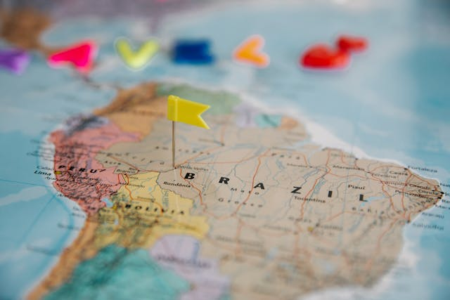
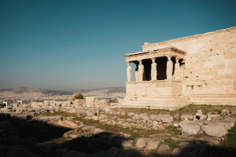
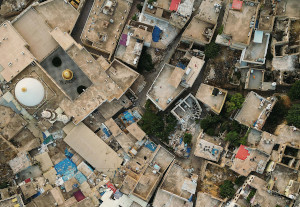

Confira o que está bombando!

PALAVRA DA EXPECIALISTA: Raphaela Nogueira Paixão | Istagram | O desafio de reduzir as desigualdades entre as regiões do Brasil.
O desafio de reduzir as desigualdades entre as regiões do Brasil.

Semelhanças e difereças: trabalho do historiador e do detetve.

A histórica segregação urbana no Brasil.

Semelhanças e difereças: trabalho do historiador e do detetve.